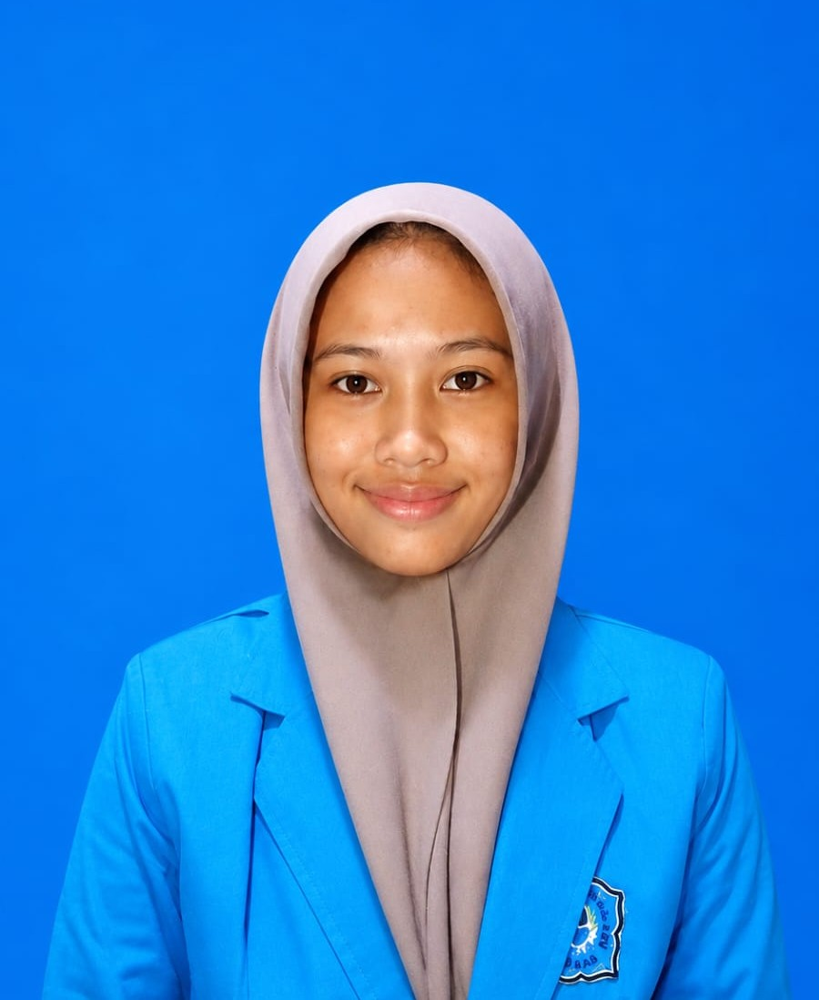

"Berkomitmen untuk terus belajar, berkembang, dan menciptakan solusi digital yang bermanfaat melalui teknologi informasi.".
Lihat PortofolioHalo, saya Dian Safira Putri, mahasiswa Teknologi Informasi yang memiliki minat besar dalam bidang pengembangan sistem, basis data, pemrograman, dan jaringan komputer. Saya memiliki semangat belajar yang tinggi serta selalu tertarik untuk mengeksplorasi teknologi baru guna meningkatkan kemampuan dan wawasan di dunia teknologi informasi. Selama masa perkuliahan, saya telah mengerjakan berbagai proyek akademik yang membantu saya memahami proses perancangan sistem, pengelolaan database, implementasi algoritma, serta konfigurasi jaringan komputer. Pengalaman tersebut membentuk kemampuan analitis, pemecahan masalah, dan kerja sama tim yang baik. Saya percaya bahwa teknologi dapat menjadi sarana untuk menciptakan inovasi yang mampu memberikan manfaat bagi banyak orang. Oleh karena itu, saya terus berusaha mengembangkan keterampilan dan pengetahuan untuk menjadi profesional yang kompeten di bidang Teknologi Informasi.
Merancang dan mengembangkan database untuk sistem klinik kesehatan yang mencakup data pasien, dokter, rekam medis, jadwal pemeriksaan, serta transaksi pembayaran. Proyek ini bertujuan meningkatkan efisiensi pengelolaan data dan pelayanan klinik.
Membangun sistem administrasi klinik yang mendukung proses pendaftaran pasien, pengelolaan data dokter, pencatatan pemeriksaan, serta pembuatan laporan administrasi secara terstruktur.
Mengembangkan berbagai program menggunakan konsep algoritma, flowchart, dan pseudocode untuk menyelesaikan permasalahan komputasi. Proyek ini melatih kemampuan logika dan pemecahan masalah secara sistematis.
Melakukan simulasi dan konfigurasi jaringan komputer menggunakan MikroTik RouterOS, termasuk pengaturan IP Address, subnetting, topologi jaringan, serta pengujian konektivitas antar perangkat.
085780725919
diansafiraputri11@gmail.com
github.com/safira-saa
Mahasiswa Teknologi Informasi